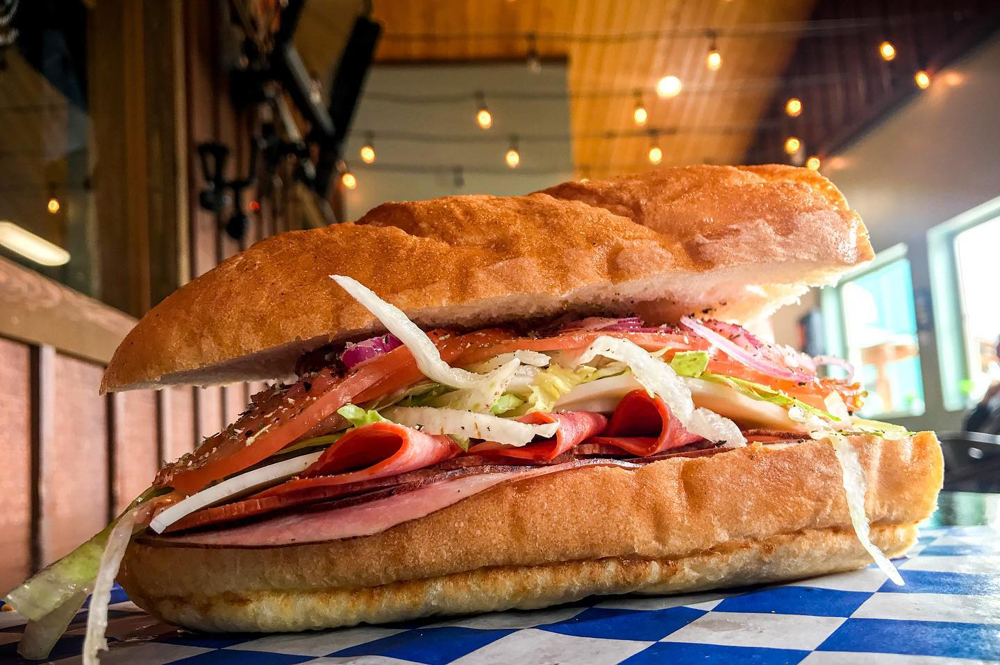

Camano Sub Joint Coming July 2020
Sandwiches on fresh-baked bread and soups made daily from REAL ingredients. Vegan & vegetarian options available.
__________________________
Located at Terry's Corner in the kiosk outside the Camano Commons Marketplace building.
848 N Sunrise Blvd
Camano Island, WA